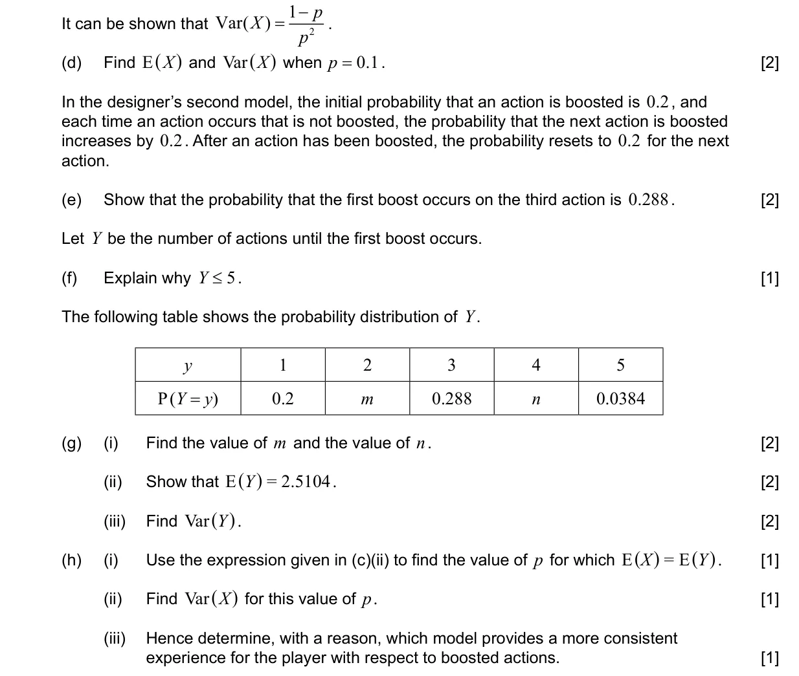
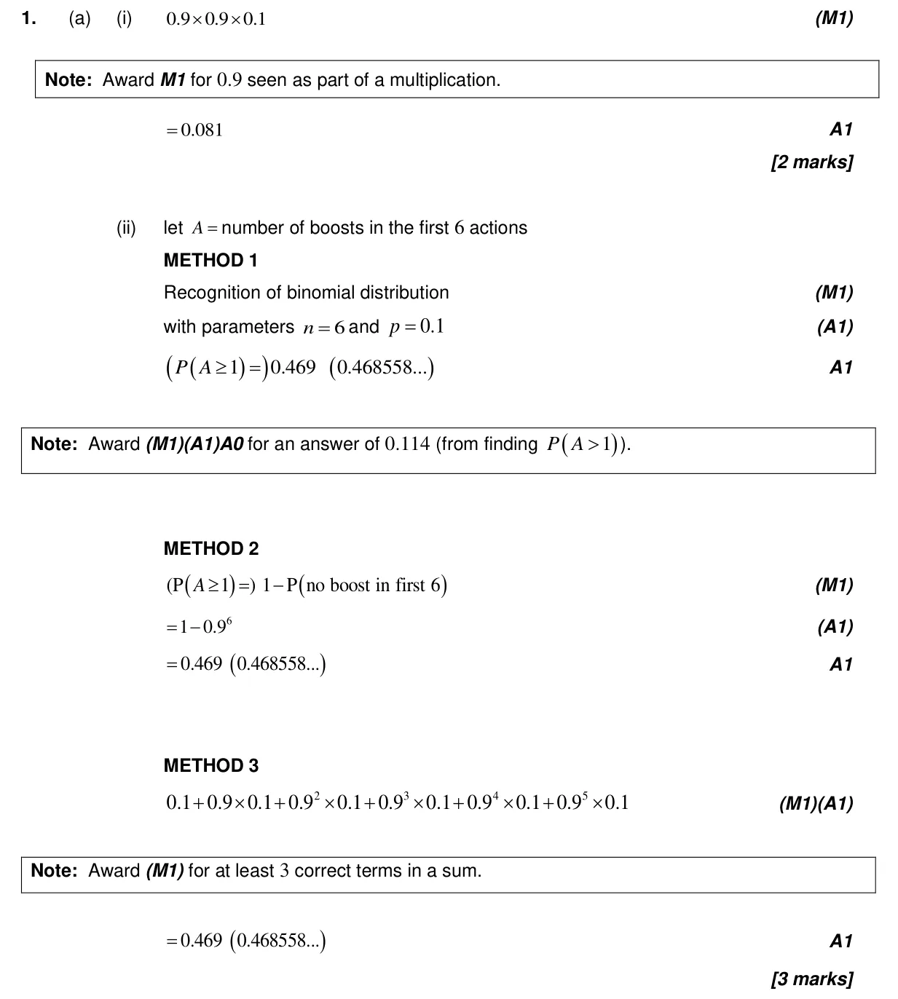
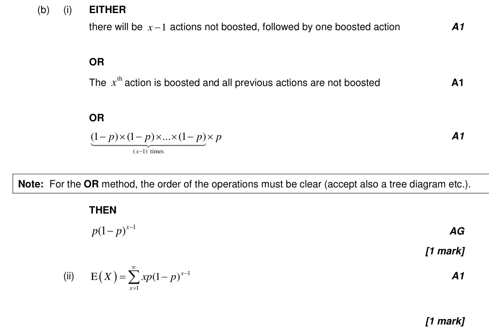
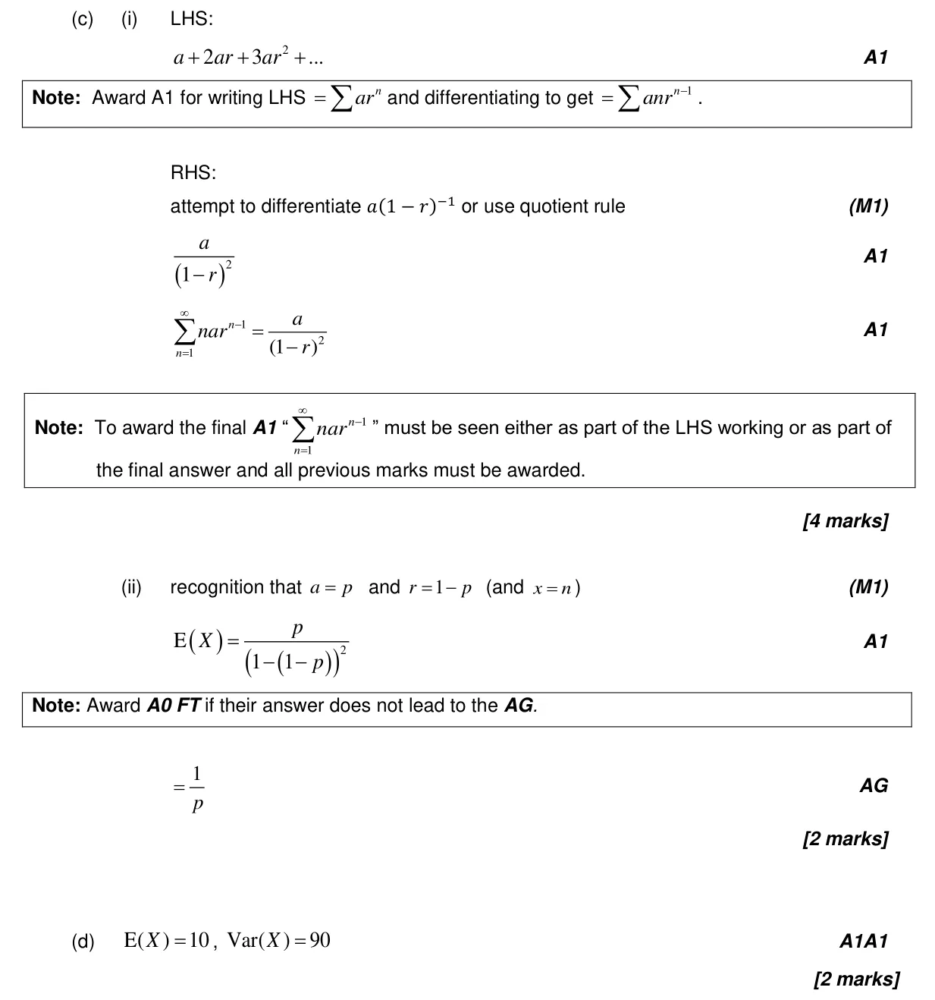
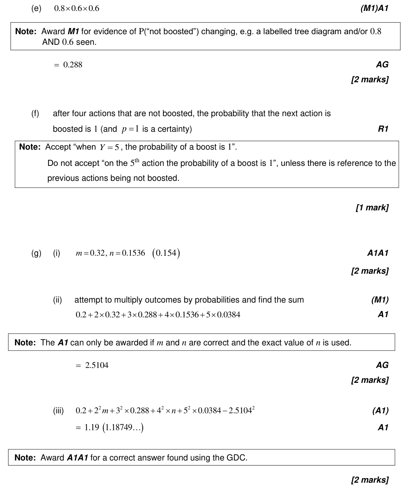
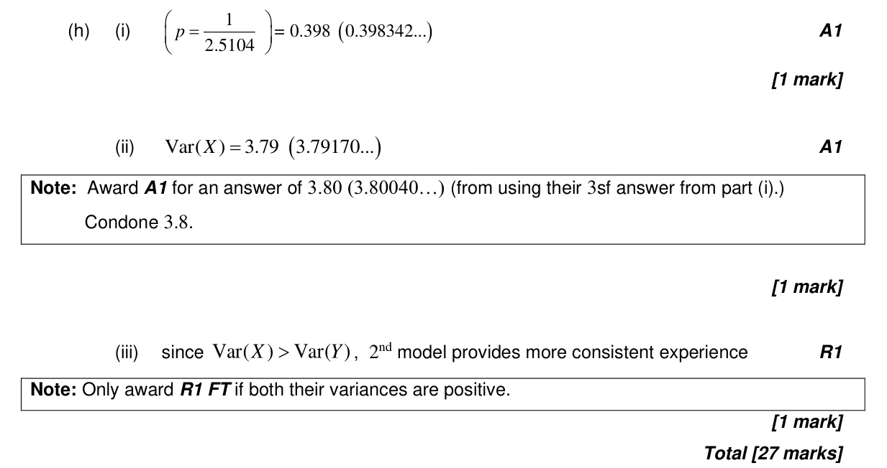

4.7 Discrete random variables4.6 Combined, mutually exclusive, conditional, independence and probability diagrams4.14 Discrete and continuous random variables: pdfs, mean, variance, median and mode5.6 Differentiating polynomials n in Q, chain, product and quotient rules5.19 Maclaurin series4.8 Binomial distribution4.5 Probability concepts and expected numbers4.3 Mean, median, mode, grouped mean, standard deviation, quartiles and IQR
Question


Markscheme




